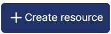
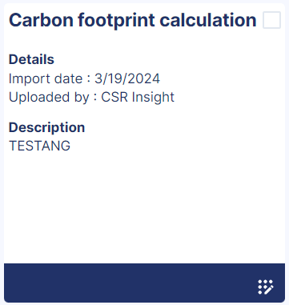
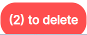

SEARCH TIP Press CTRL + F (Windows and Linux) or CMD + F (Mac) to search within this page.
To access this screen, click Home.
Some actions, such as screen access, are permitted only for authorized users, that is, users with the appropriate profile. In other words, if the user does not have the right profile, the user cannot perform the action.
To configure this security (also called user rights), complete the following steps:
-
Define the profiles in the Profile Management screen.
-
Define users and attach one or more profiles to them in the User Management screen.
-
Assign user rights to the desired profiles in the Profile Matrix screen.
The table below contains screen actions that are related to user rights:
| Module | Screen | Action |
|---|---|---|
|
Online help |
User guide |
Screen access* |
|
Write : Screen access - visualization and export resources + add and edit resources* |
||
|
Read : Screen access - visualization and export resources* |
*These user rights are located in the Administration block on the Profile Matrix screen.
For more information on this screen, see the following documentations:
On the Resources tab, you can view and manage resources, that is, useful documents to help you manage your sustainability development projects.
You can also view useful links provided by kShuttle. They are available as read-only links.
You can:
{kind=link}
Create a Resource
NOTE Only authorized users can create a resource. See the Security Notes above.
To create a resource:
-
Click the

button at the top right of the screen.The Create resource pop-up panel appears.
-
Enter a title for your resource. To do so:
-
Click the Title field.
A new pop-up panel appears.
-
Enter a French and an English title in the corresponding fields.
-
Click outside the fields to enable data submission.
-
Click Submit.
NOTE To reset data entries for one field only, click the button.
To reset all data entries, click outside the fields to enable this feature, then click Reset.
-
-
Add an attachment. To do so, drag and drop or click the Attachment upload area.
WARNING Your attachment file must not exceed 30 MB and be in jpg, jpeg, png, pdf, or xlsx format.
NOTE To delete an attachment, click the button next to the attachment file name.
-
Optional: You can do the following actions:
-
Add an icon.
NOTE Select the icon from the Icon drop-down menu.
-
Add one or multiple tags.
NOTE To add a tag, enter your tag name in the Tags field, then click the Enter key.
To delete a tag: Click the button next to the tag name. -
Enter the French and English descriptions.
-
-
Click Create.
A resource card is created.

Edit or Delete a Created Resource
NOTE You cannot edit or delete resources provided by kShuttle. Only authorized users can edit or delete created resources. See the Security Notes above.
To edit a resource:
-
Click the button at the bottom right of the card of the resource you want to edit.
The Create resource pop-up panel appears.
-
Edit, as desired, your resource information.
-
Click Edit.
The resource is edited.
To delete a resource:
-
Click the button at the top right of the screen.
-
Select the box of one or multiple resources you want to delete.
-
Click the

button that appears at the bottom of the screen.The Delete this resource pop-up window appears to confirm your deletion.
-
Click OK.
The selected resources are deleted.
To disable the delete function, click the button at the top right of the screen.
Search for a Resource
You can search for a resource in three ways:
Search by using the Search Box
To search for a resource, enter at least two letters in the search box.
As you type, the resource list changes.
Search by using the Filters
To search for a resource by filtering:
-
Hover over the button at the top right of the screen.
-
Sort from A to Z or from Z to A by selecting the first or the second option.
-
Select the Uploaded by or Most recent filter.
The resources that match the filters appear.
To clear the sort, hover over the button, then click Clear the sort.
Search by Tag
To search by tag, select one or multiple tags from the drop-down menu.